Инструкция по эксплуатации
Общие сведения и назначение
Монтажная система Suprlan LK — предназначена для организации монтажа камер видеонаблюдения с обеспечением:
- Надёжной фиксации телекамер на различных поверхностях
- Защиты коммутационных модулей от воздействия окружающей среды
- Предотвращения несанкционированного доступа к соединениям
- Обеспечения возможности монтажа в труднодоступных местах
Преимущества системы
- Уникальный байонетный замок для быстрой установки одной рукой
- Высокая степень защиты от пыли и влаги (комплектация ШТОРМ)
- Ударопрочность IK10
- Срок службы до 15 лет
- Возможность установки пломбы для защиты от вскрытия
Области применения
- Системы видеонаблюдения на объектах коммерческой недвижимости
- Промышленные предприятия
- Жилые комплексы (в том числе деревянные поверхности)
- Парковки и открытые территории
- Объекты с повышенными требованиями безопасности
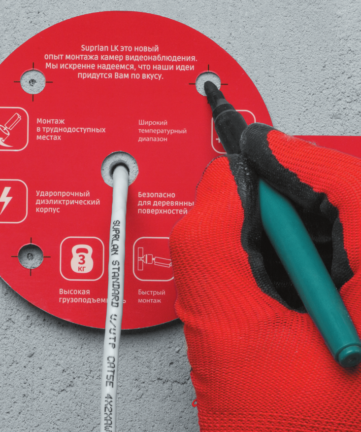
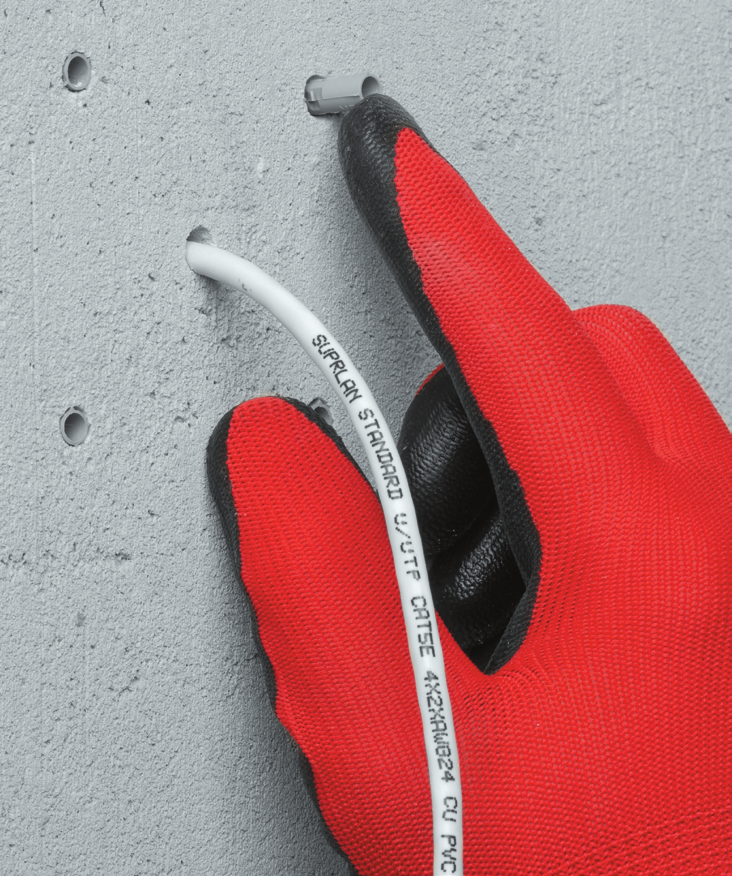
Комплектация
Базовая комплектация
| Компонент | Кол-во |
|---|---|
| Основание монтажной коробки | 1 шт. |
| Крышка с платформой для камеры | 1 шт. |
| Разметочный трафарет | 1 шт. |
| Винты для крепления к поверхности | 4 шт. |
| Винты для крепления камеры | 3 шт. |
| Коннектор RJ-45 с золотым напылением Suprlan | 1 шт. |
| Нейлоновый хомут | 1 шт. |
| Винт-сверло | 1 шт. |
Дополнительная комплектация (опция)
- Силиконовые заглушки — для повышенной влагозащиты
- Пломбы — для защиты от несанкционированного доступа
- Монтажные кронштейны — для установки на столбы/трубостойки
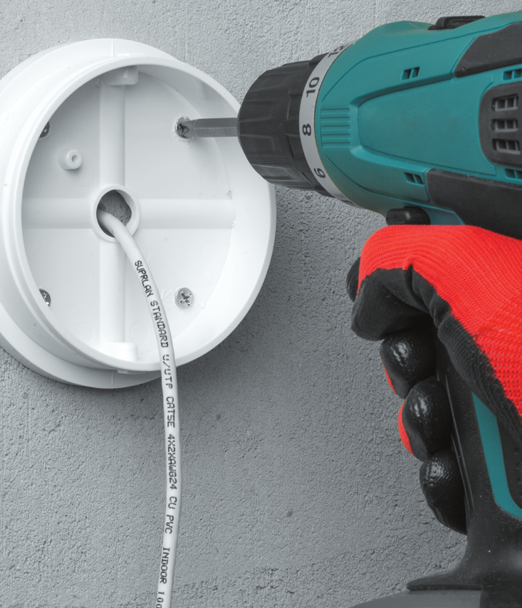
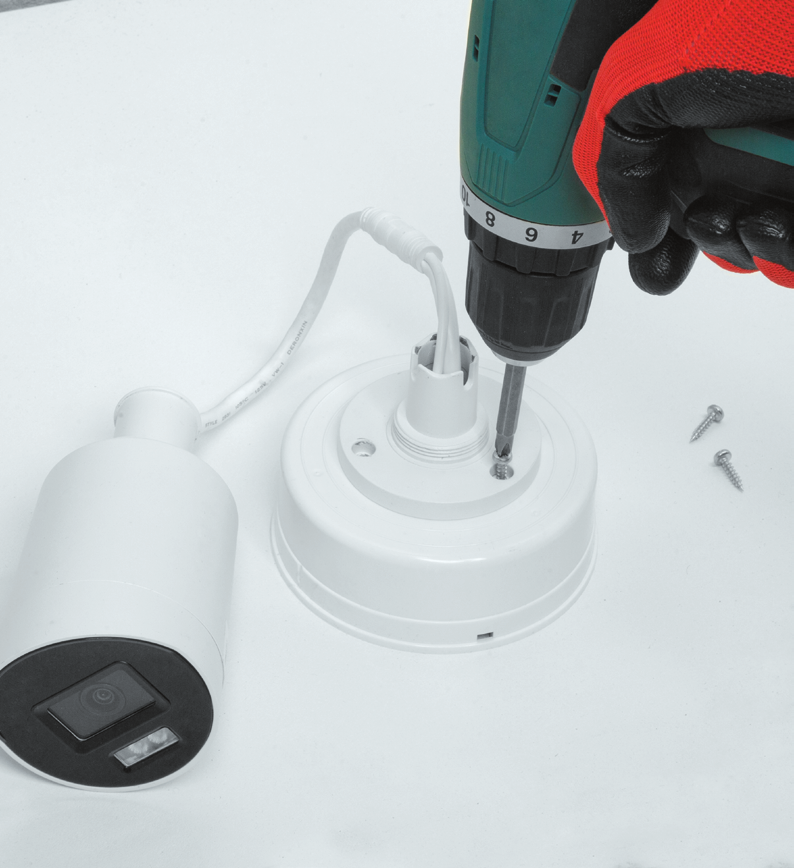
Технические характеристики
| Параметр | Значение | Примечание |
|---|---|---|
| Материал корпуса | ABS PC | Ударопрочный, диэлектрический |
| Степень защиты | IP-54 | Модификация ШТОРМ |
| Ударопрочность | ГОСТ 62262, класс 10 | IK10 |
| Температурный диапазон | -60°C до +80°C | Климатическое исполнение |
| Грузоподъёмность | До 3 кг | Вес камеры с оборудованием |
| Совместимость с камерами | Диаметр основания < 115 мм | Универсальная платформа |
| Тип крепления | Байонетное соединение | Быстрая установка |
| Цвет | Белый / Чёрный | 2 варианта |
| Габариты | 110×115×50 мм | Компактный форм-фактор |
| Срок службы | До 15 лет | При нормальных условиях |
| Гарантия | 3–5 лет | С даты производства |
⚠️ Требования безопасности
Электробезопасность
- Перед началом монтажных работ ОБЯЗАТЕЛЬНО обесточьте кабельные линии
- Используйте только изолированный инструмент с диэлектрическими ручками
- Работайте в перчатках с прорезиненным покрытием
- Проверьте отсутствие напряжения на проводах индикаторной отвёрткой
Работа на высоте
- Используйте только сертифицированные страховочные системы
- Работайте с напарником для соблюдения техники безопасности
- При ветре более 10 м/с работы на высоте ЗАПРЕЩЕНЫ
- Убедитесь в надёжности опоры и лестницы
Механическая безопасность
- Используйте защитные очки при сверлении отверстий
- Проверьте надёжность крепёжных элементов перед установкой
- Не превышайте максимальную нагрузку 3 кг на монтажную коробку
Подготовка к монтажу
Шаг 1: Проверка комплектации
- Основание монтажной коробки
- Крышка с платформой
- Разметочный трафарет
- Комплект винтов
- Коннектор RJ-45
- Нейлоновая стяжка
- Винт-сверло
Шаг 2: Инструменты
Предпочтительный инструмент
- Электрическая дрель (диаметр сверла 6-8 мм)
- Шуруповёрт с битами PH2/PZ2 либо крестовая отвёртка
- Индикаторная отвёртка
- Монтажная лента либо хомуты (для трубостоек)
- Рулетка или строительный уровень
- Стриппер для снятия оболочки с кабеля
- Обжимной инструмент для RJ-45
Средства защиты
- Защитные очки
- Перчатки с прорезиненным покрытием
- Страховочная система (при работе на высоте)
Шаг 3: Подготовка поверхности
Для плоских поверхностей (кирпич, бетон)
- Очистите поверхность от грязи, пыли, старой краски
- Проверьте ровность поверхности с помощью уровня
- Разметьте отверстия с помощью трафарета
- Проверьте наличие коммуникаций в месте сверления
Для цилиндрических поверхностей (столбы, трубы)
- Измерьте диаметр опоры (для подбора хомутов/ленты)
- Обеспечьте доступ к месту монтажа
- Подготовьте хомуты (если требуется)
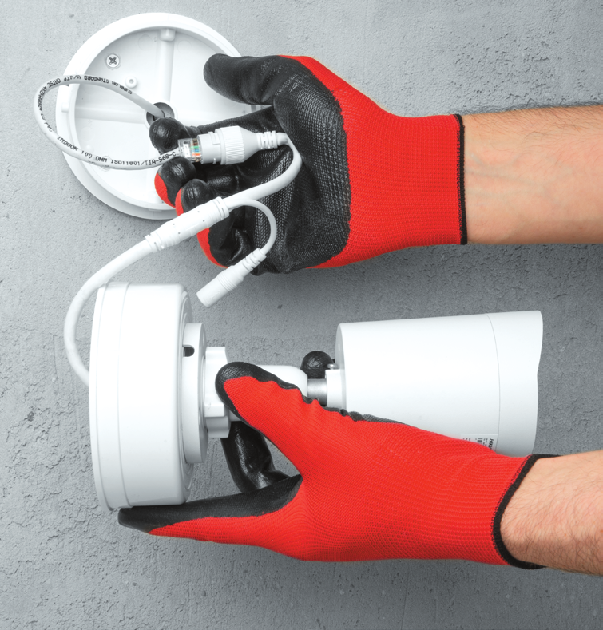
Процесс монтажа
Этап 1: Подготовительные работы
Обесточьте кабельные линии
- Отключите питание на распределительном щитке
- Убедитесь в отсутствии напряжения тестером
Подготовьте монтажную поверхность
- Очистите и выровняйте поверхность
- Приложите разметочный трафарет
- Отметьте центры отверстий карандашом или маркером
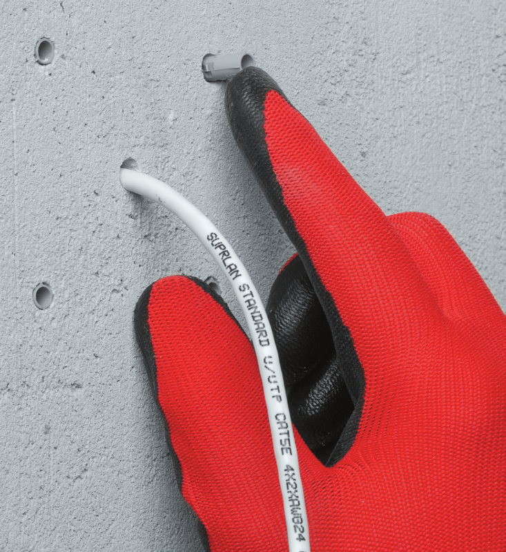
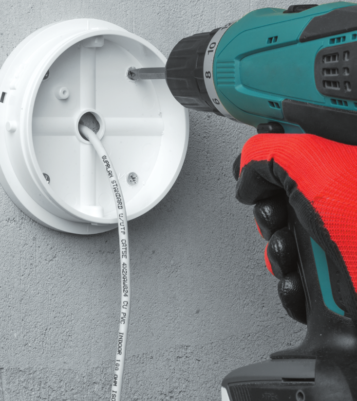
Этап 2: Монтаж основания
Сверление отверстий
- Используйте сверло диаметром 6-8 мм
- Глубина отверстий: 40-50 мм для кирпича/бетона
- Для металла используйте сверло по металлу
Установка крепёжных элементов
- Очистите отверстия от пыли
- Установите дюбели для конкретного типа поверхности
- Предварительно наживите саморезы из внутренней полости основания
- Проденьте кабели через центральное отверстие основания
- Сопоставьте основание с размеченными посадочными местами
- Закрутите винты для крепления основания
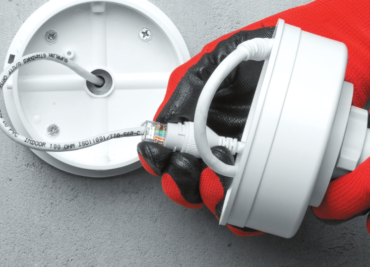
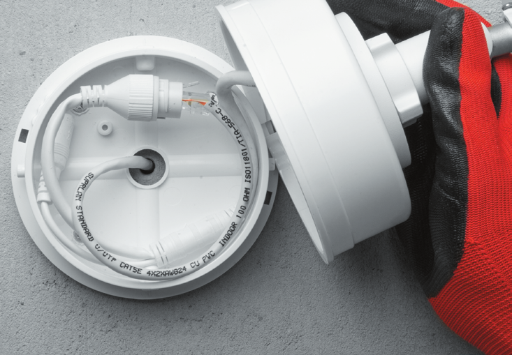
Этап 3: Подготовка камеры и крышки
Монтаж камеры на крышку
- Установите камеру на платформу крышки
- Проденьте хвостовик через центральное отверстие
- Закрепите 3 винтами (не перетягивайте!)
Подготовка кабельных соединений
- Установите коннектор RJ-45 с золотым напылением на кабель
- Оставьте запас кабеля длиной 15-20 см внутри коробки
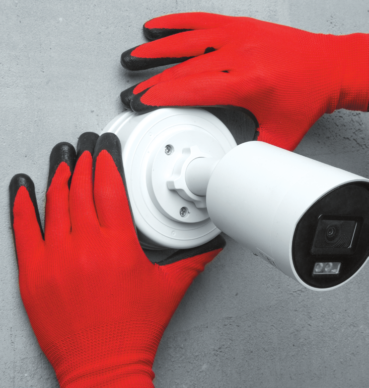
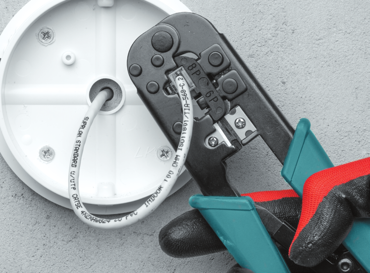
Этап 4: Финальная сборка
Размещение кабелей внутри коробки
- Оставьте кабель 15-20 см для обслуживания и обожмите его
- Для модификации «STORM»: прокладки ставятся перед обжимом
- Правильно уложите кабель — без заломов и изгибов
Установка крышки с камерой
- Подключите все необходимые кабели к камере
- Аккуратно совместите байонетные фиксаторы
- Нажмите на крышку и проверните на 30° по часовой стрелке
- Убедитесь в фиксации – должен быть слышен характерный щелчок
- Установите саморез для предотвращения вскрытия (опционально)
Установка пломбы (опционально)
Установите номерную пломбу в сквозное отверстие внутри стенки основания и крышки. Отверстие открывается только в случае полной фиксации крышки.
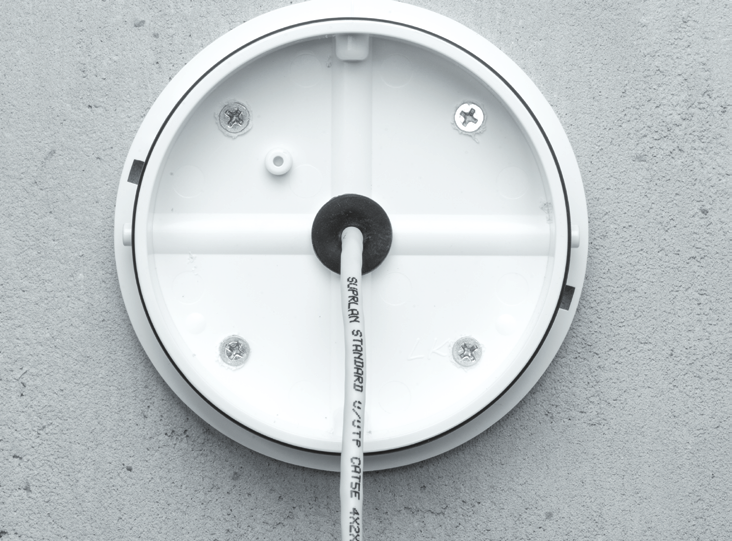
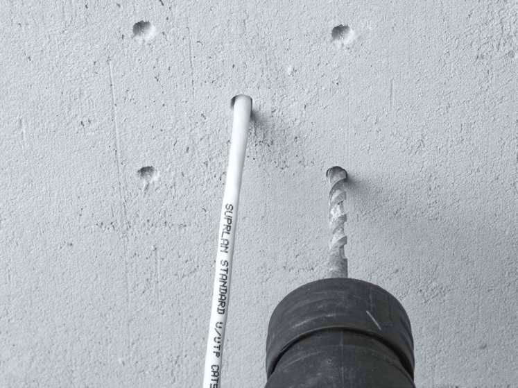
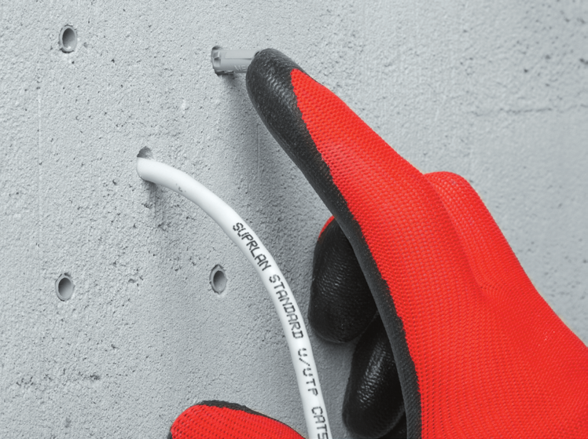
Особенности монтажа на разных поверхностях
Кирпич / Бетон
- Просверлите отверстия
- Вставьте в отверстия дюбели
Металлические конструкции
- Прикрутите основание самонарезающими винтами
- Заземление металлических частей
Трубостойки / Столбы
- Прикрутите крепёжный элемент к основанию коробки
- Прикрутите основание к трубе при помощи обхватных хомутов
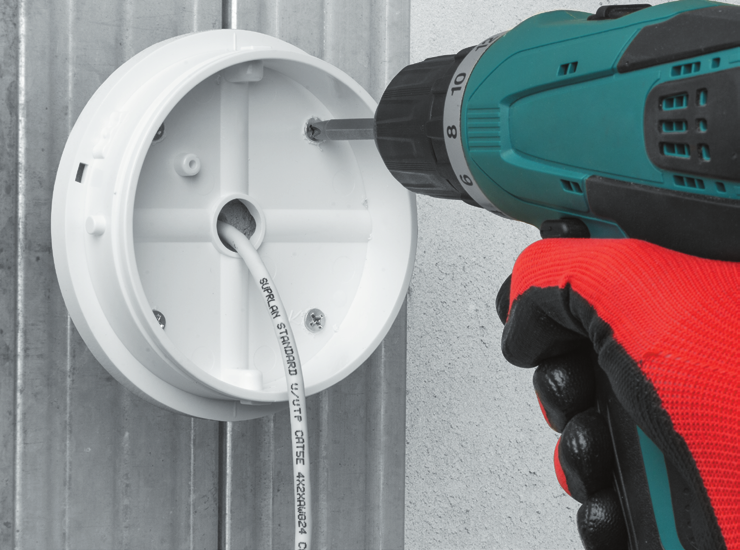
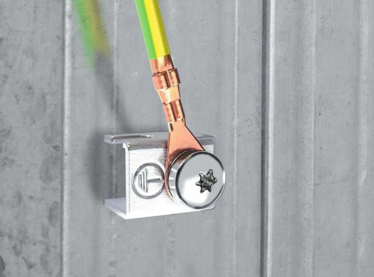
Обслуживание
Периодичность обслуживания
| Операция | Периодичность | Примечания |
|---|---|---|
| Визуальный осмотр | Раз в 6 месяцев | Проверка целостности корпуса |
| Проверка крепления | Раз в 6 месяцев | Подтяжка винтов при необходимости |
| Очистка от грязи | По мере загрязнения | Только мягкие средства |
| Проверка уплотнителей | Раз в 6 месяцев | При наличии влагозащиты |
| Проверка пломб | При обслуживании | Читаемость пломбы |
Визуальный осмотр
Проведите визуальный осмотр на наличие повреждений и коррозии. Проверьте:
- Целостность корпуса (на предмет вандализма)
- Состояние крепёжных винтов (коррозия, ослабление)
- Целостность уплотнительных элементов
- Наличие паутины, соли, оплавления проводов
Чистка корпуса
- Используйте только мягкую ткань и слабый мыльный раствор
- После чистки протрите сухой тканью
- Не используйте высокое давление воды
Возможные неисправности и их устранение
| Неисправность | Причина | Устранение |
|---|---|---|
| Коррозия винтов | Влажная среда | Замена на нержавеющие винты |
| Трещина в корпусе | Механическое повреждение | Полная замена коробки/крышки |
| Затруднённое вращение крышки | Попадание грязи | Чистка механизма, смазка силиконовой смазкой |
| Повреждение уплотнителя | Климат, мех. повреждения | Чистка, силиконовая смазка, замена |
Процедура замены компонентов
Замена крышки
- Обесточьте камеру и поверните крышку против часовой стрелки
- Отсоедините все провода
- Открутите камеру от старой крышки
- Прикрутите камеру к новой крышке
- Соедините все провода
- Зафиксируйте новую крышку на основании
Замена уплотнителей
- Снимите крышку
- Аккуратно удалите старый уплотнитель
- Очистите канавку от загрязнений
- Установите новый уплотнитель
- Проверьте герметичность
Утилизация
Материал корпуса: ABS PC — подлежит вторичной переработке как пластик марки 7.
Порядок утилизации
- Демонтаж — отключите питание, снимите камеру
- Разделение — отделите пластиковые части от металлических
- Сортировка — пластик → контейнер для пластика, металл → металлолом
- Сдача — в пункты приёма вторсырья
Гарантийные обязательства
| Параметр | Значение |
|---|---|
| Стандартная гарантия | 3 года с даты производства |
| Расширенная гарантия | до 5 лет с даты производства |
| Срок службы | до 15 лет при соблюдении условий |
Гарантия включает
- Замену изделий с заводскими дефектами
- Бесплатную консультационную поддержку
- Предоставление технической документации
Гарантия не распространяется
- Механические повреждения в результате неправильного монтажа
- Повреждения от воздействия агрессивных сред
- Естественный износ при эксплуатации более 15 лет
- Повреждения при нарушении правил техники безопасности
- Вандализм
Контактная информация
| Горячая линия | +7 (800) 500-76-80 |
| info@supr.ru | |
| Сайт | www.supr.ru |
| Режим работы | Пн-Пт 9:00-18:00 |
Приложения
Приложение А: Чек-лист монтажа
- Проверка комплектации
- Подготовка поверхности
- Разметка отверстий
- Сверление и установка крепежа
- Монтаж основания
- Установка камеры на крышку
- Подключение кабелей
- Фиксация крышки (байонет)
- Проверка работоспособности
- Оформление документации
Приложение Б: Все иллюстрации
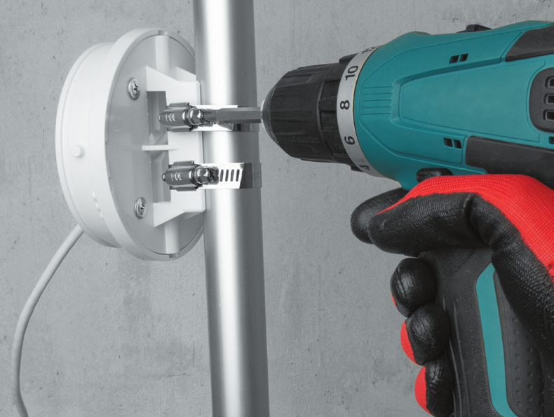
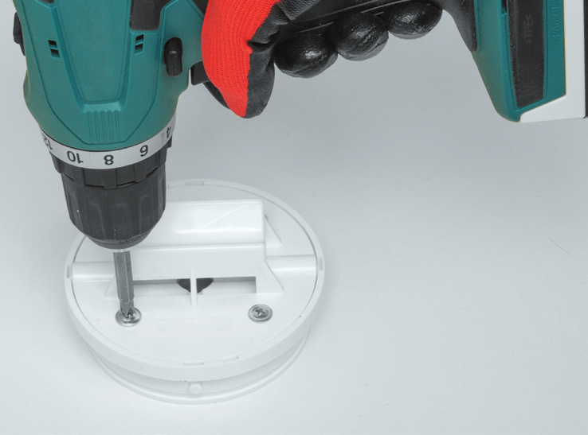
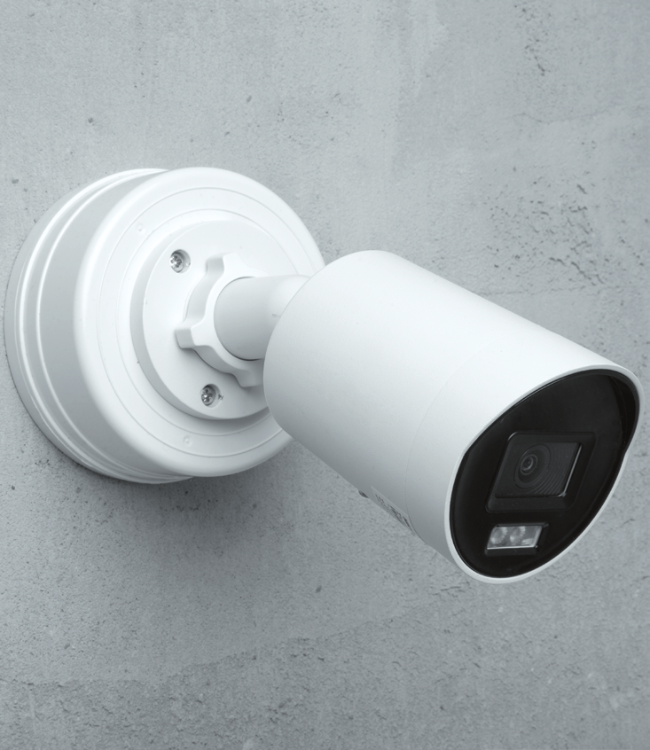
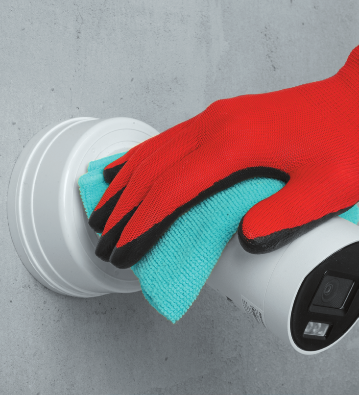
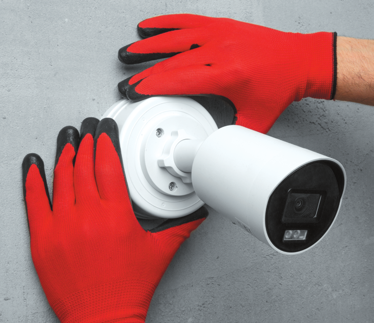
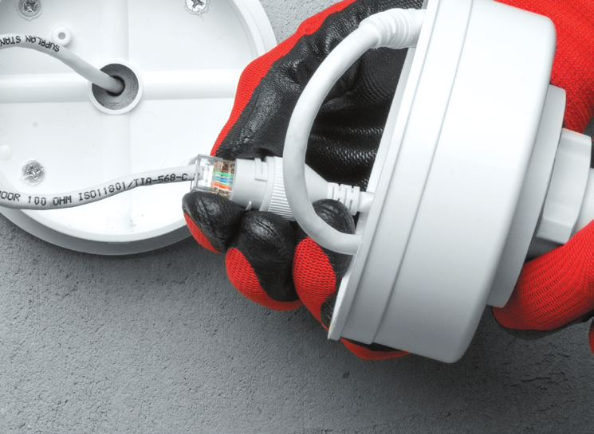
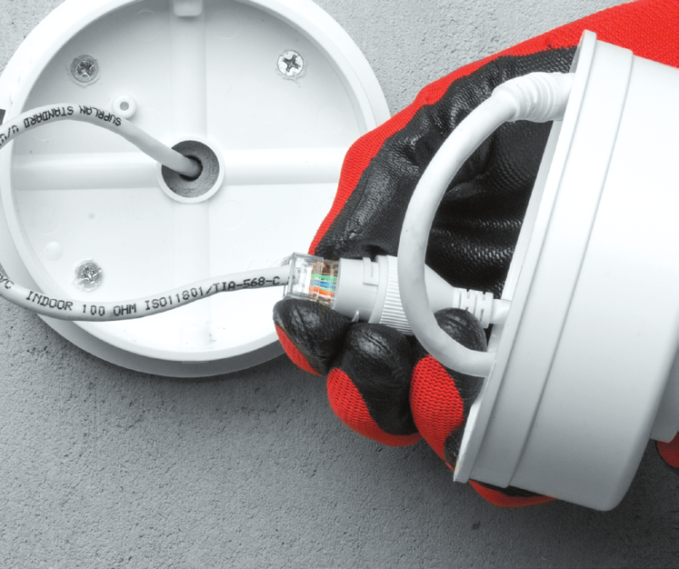
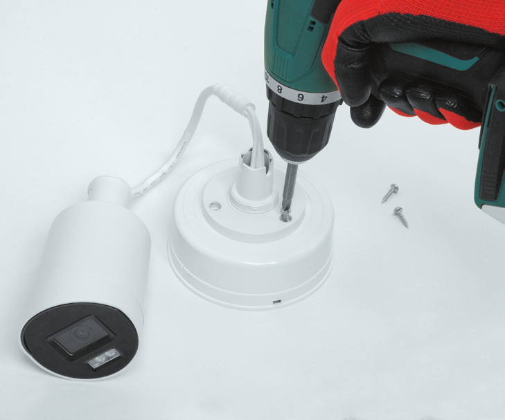
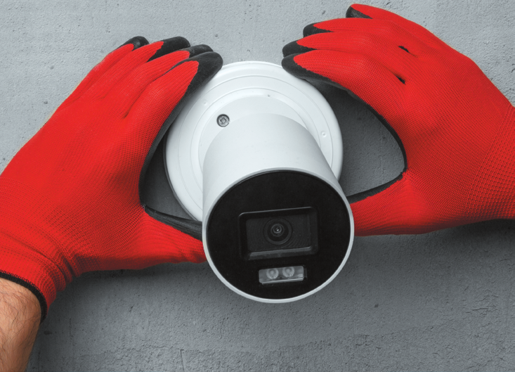
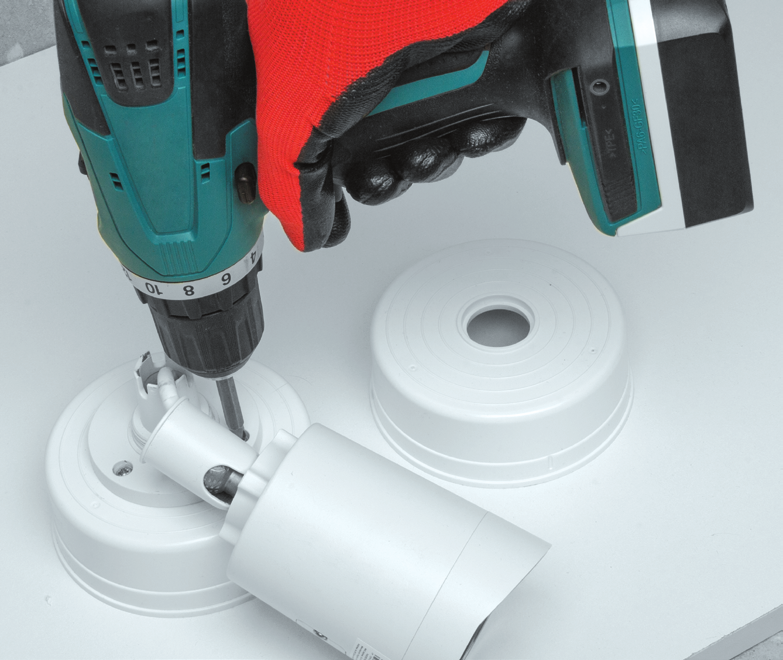